Module 1: Human Nervous System#
1.1 Introduction#
The Human Nervous System consists of a brain, spinal cord, nerves and is one of the most complex and vital systems in the body, responsible for receiving, transmitting, and processing information. It acts as the body’s command & control center and enables communication between different parts of the body, allowing organisms to interact with their environment.
It is divided into two major parts based on structure (anatomy):
Central Nervous System (CNS)
Peripheral Nervous System (PNS)
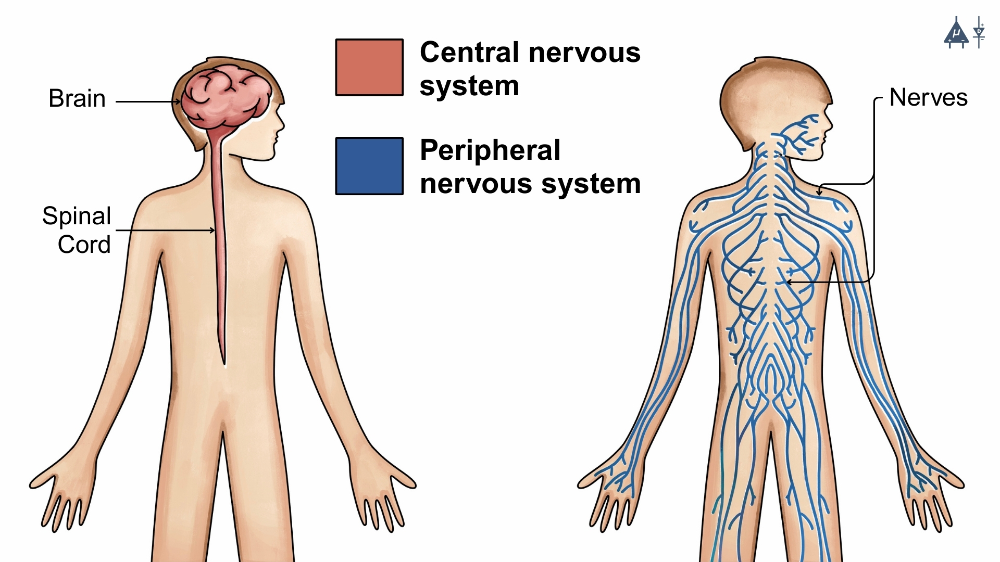
Parts of Human nervous system#
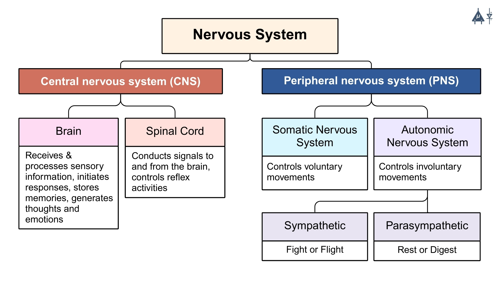
An overview of the nervous system#
This overview (above) is a simplified representation and does not show the full nervous system. You may refer to advanced textbooks for further explanation.
Fun Fact
The human nervous system (primarily the brain) consumes about 20% of the body’s total resting state energy despite the fact that brain weight is just 2% of whole body weight (in adults).
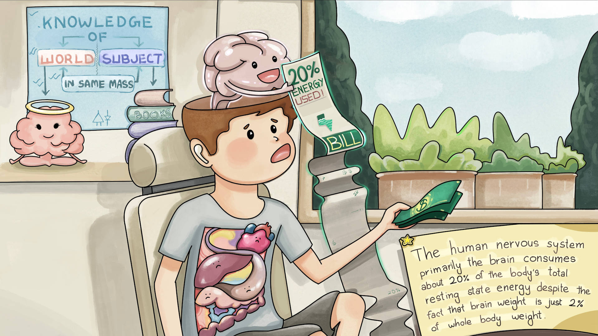
Fun Fact
The human nervous system can transmit signals at speeds over 120m/s (about 431 km/h), faster than a Formula 1 race car.
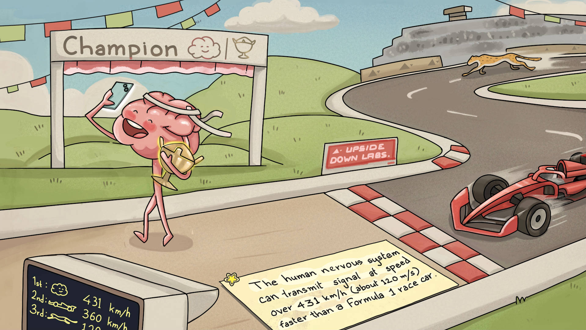
1.2 Central Nervous System (CNS)#
The Central Nervous System (CNS) is the body’s command center and is made up of your brain and spinal cord. The brain is protected by the cranium (also known as skull) while your vertebrae protect your spinal cord.
1.2.1 The Brain(Encephalon)#
The brain is the most complex organ which communicates with the body by sending and receiving chemical and electrical signals. Some signals remain within the brain, while others are transmitted through the spinal cord and across a network of nerves to distant parts of the body. This communication relies on billions of neurons that form the central nervous system.
Fun Fact
The human brain weighs about 3 pounds(1.3-1.4 KG) in the average adult. Out of which around 75% weight is just of water only.
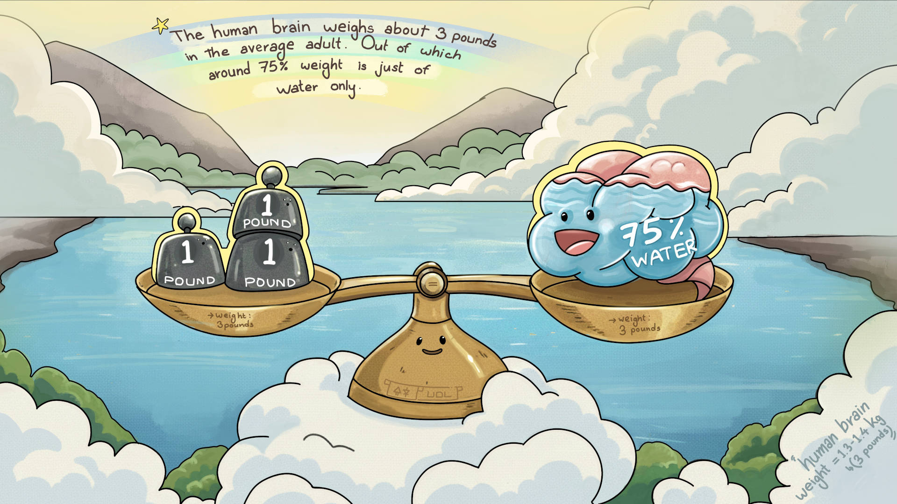
Fun Fact
Our brain has no pain receptors that’s why neurosurgeons can operate on brain tissue while the patients are awake. Still, headaches can occur because of the surrounding blood vessels, nerves and muscles which have pain receptors in it.
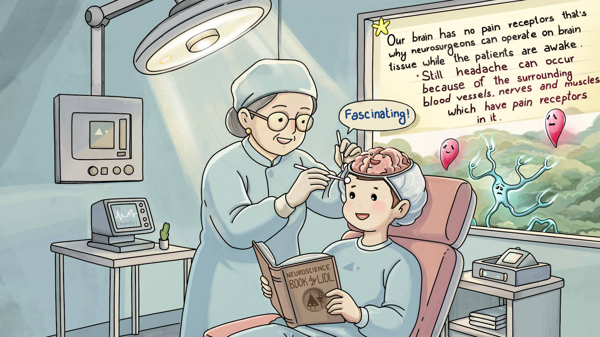
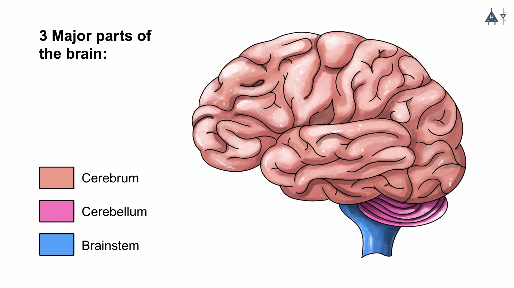
3 major parts of human brain#
Cerebrum#
Cerebrum is the largest part of the brain which can be divided into 2 hemispheres, right and left.
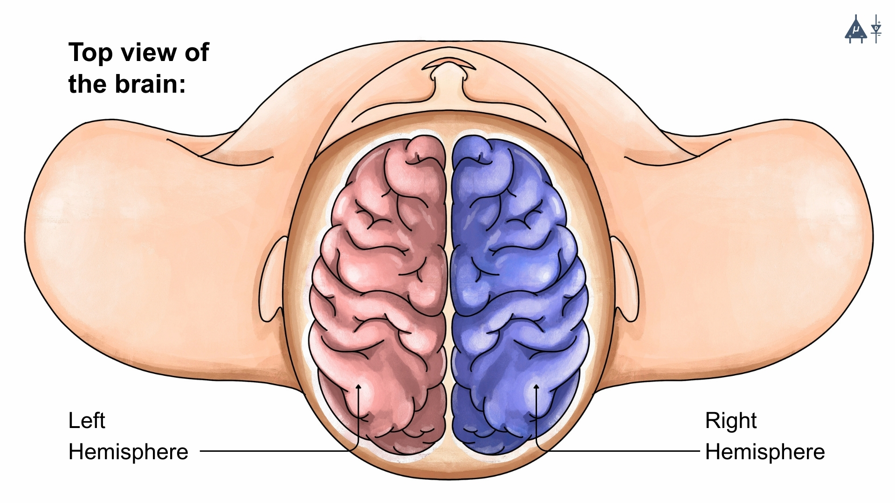
The 2 hemispheres of the brain#
Each hemisphere is further divided into four major lobes:
Frontal lobe: The largest brain lobe, situated at the front of the head, the frontal lobe is involved in personality characteristics, decision-making, movement, speech and smell.
Parietal lobe: Located in the middle part of the brain, the parietal lobe helps a person identify objects and understand spatial relationships (where one’s body is compared with objects around the person). The parietal lobe is also involved in processing sensory information (touch, pain, temperature) and understanding spoken language.
Temporal lobe: Positioned on the sides of the brain, the temporal lobes are involved in short-term memory, speech, musical rhythm and some degree of smell recognition.
Occipital lobe: Found at the back of the brain, the occipital lobe is primarily responsible for processing visual information.
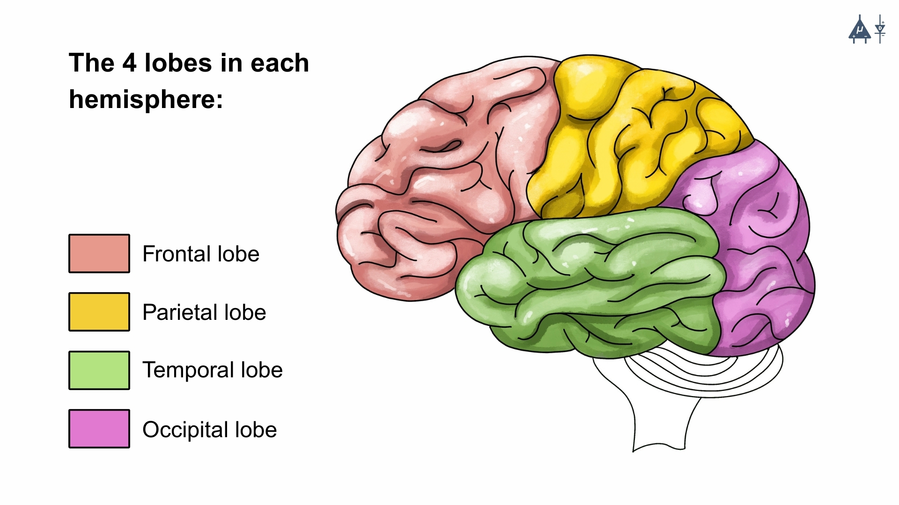
Different lobes of the brain#
Cerebellum#
The cerebellum (little brain) is a fist-sized portion of the brain located at the back of the head and above the brainstem. Its function is to coordinate voluntary muscle movements and to maintain posture, balance and equilibrium. The 2 hemispheres of cerebellum are connected by the vermis.
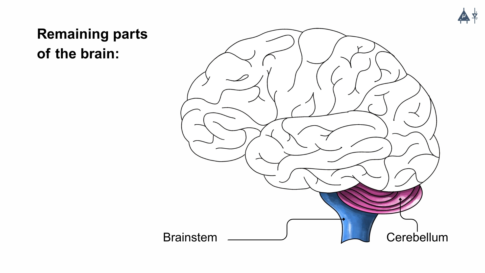
The cerebellum and brainstem#
Division |
Alternative name |
Function |
|---|---|---|
Vestibulo cerebellum |
Flocculo-nodular lobe |
Balance + eye movement |
Spino cerebellum |
Vermis + Intermediate |
Body posture + limb movements |
Cerebro cerebellum |
Lateral hemispheres |
Planning + fine movements |
Fun Fact
The cerebellum contains more neurons than the rest of the brain combined, despite being only about 10% of the brain’s volume.
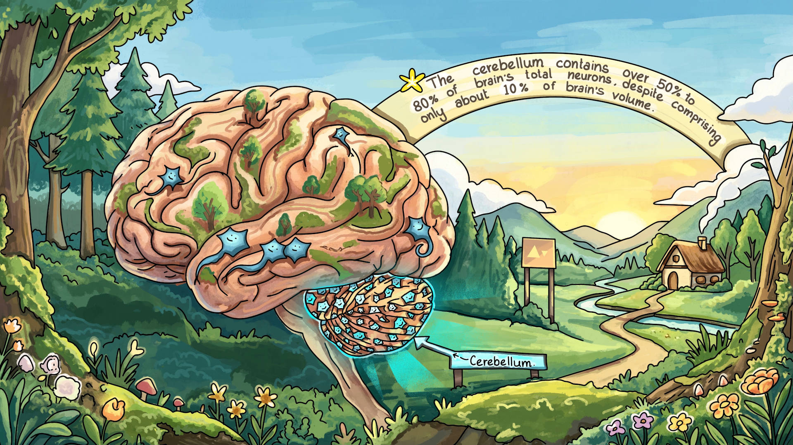
Functions of cerebellum#
The cerebellum receives input from nearly all types of sensory systems.
It receives proprioceptive information from the spinal cord and special sensory inputs from the eyes (visual), ears (auditory), and vestibular organs responsible for balance.
It sends signals to most areas of the brain that are responsible for controlling movement.
Because of these extensive connections, the cerebellum integrates sensory information with motor signals to help coordinate movements.
It helps regulate every aspect of movement: its speed, distance, strength, and direction, as well as how smoothly it begins and ends.
As a result, damage to the cerebellum leads to poor coordination and imprecise movements.
The cerebellum also sends signals to brainstem nuclei that give rise to major descending motor pathways.
Therefore, injury to the cerebellum often results in abnormal posture and problems with balance.
Fun Fact
Our cerebellum acts like a tiny future predictor: Using past experience, it predicts the sensory results of our movements milliseconds before feedback arrives, allowing our brain to adjust instantly so our actions stay smooth, precise, and jerk-free.
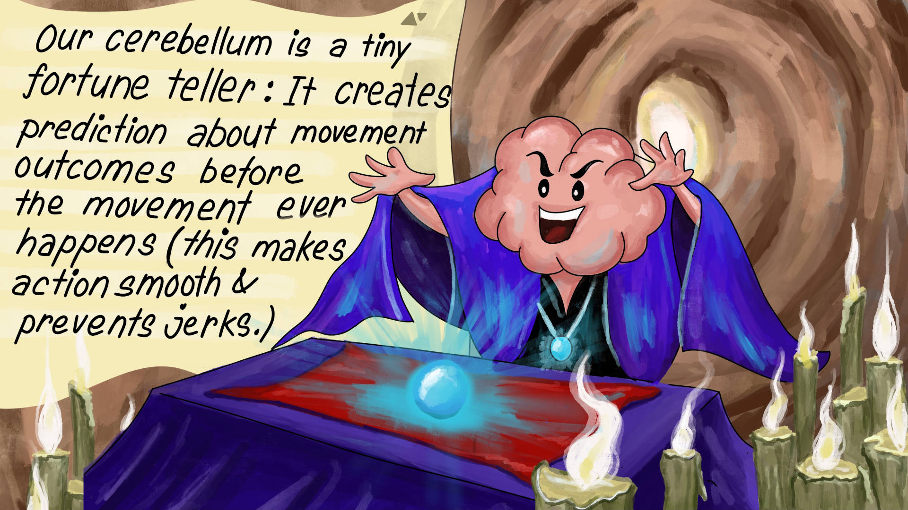
Brainstem#
The brainstem (middle of brain) connects the cerebrum to the spinal cord. The brainstem includes the midbrain, the pons and the medulla.
Midbrain: Involved in motor control and auditory/visual processing.
Pons: It is a connection between midbrain and medulla. It controls sleep, respiration, and some motor functions.
Medulla oblongata: At the bottom of the brainstem, the medulla is where the brain meets the spinal cord. The medulla is crucial for survival, as it regulates vital bodily functions, including heart rate, breathing, blood circulation, and the balance of oxygen and carbon dioxide levels. It also controls reflexive actions such as sneezing, vomiting, coughing, and swallowing. Additionally, most cranial nerves (III-XII) originate from the brainstem, highlighting its importance in sensory and motor functions of the head and neck.
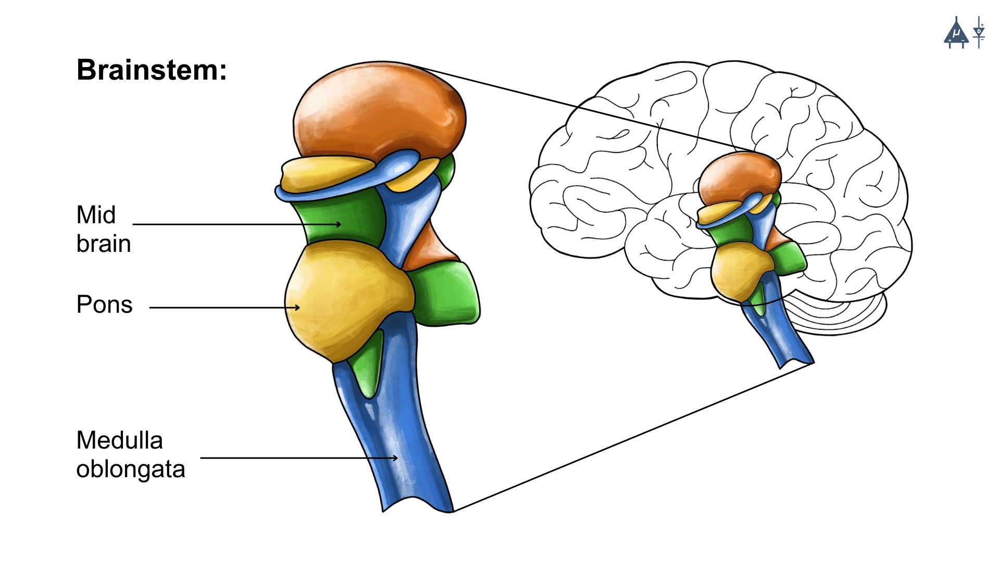
Overview of the brainstem#
Fun Fact
Despite the brain complexity, it just consumes a power of 20 watt which is roughly less than a typical bulb.
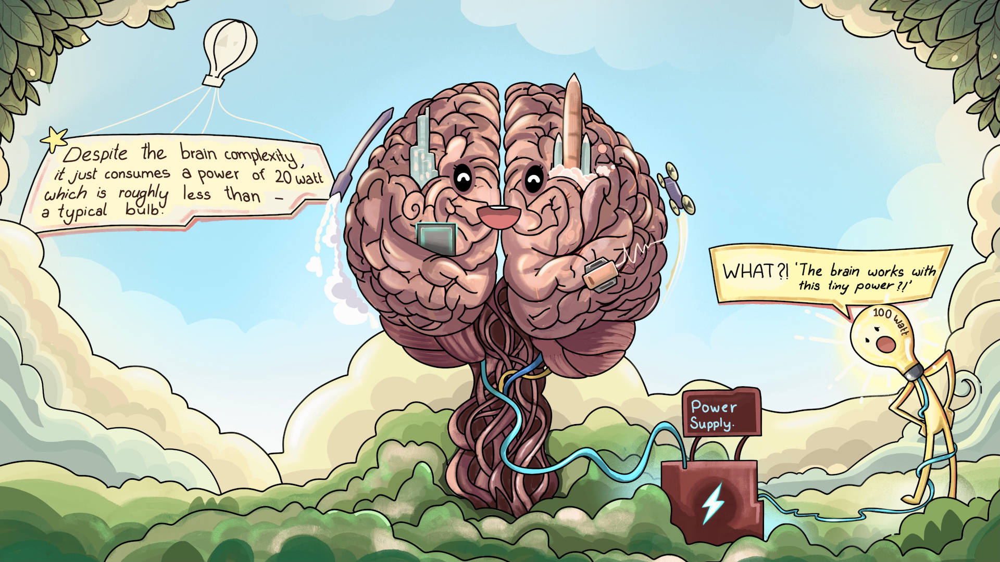
Fun Fact
The right hemisphere of the brain controls the left side of the body, and the left hemisphere of the brain controls the right side of the body.
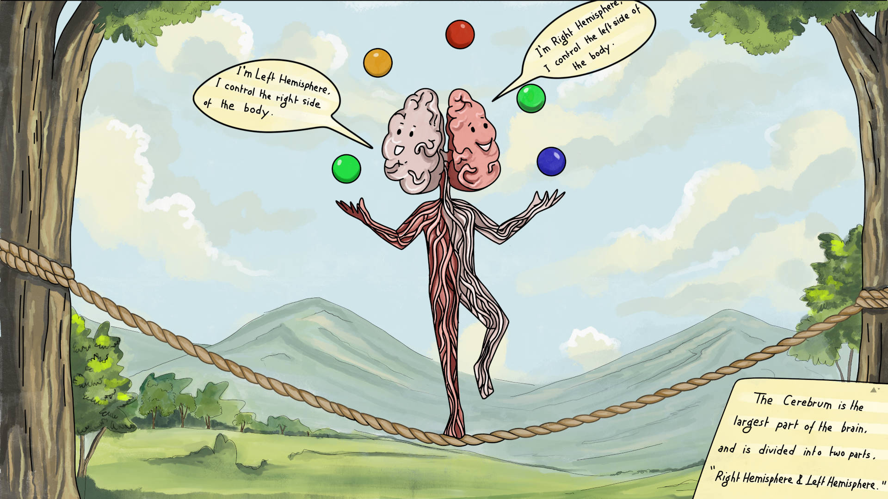
The two halves communicate with one another through a large C-shaped structure called the corpus callosum, which connects the cerebral hemispheres.#
1.2.2 The Spinal Cord#
The spinal cord begins at the base of the medulla and passes through a large opening (foramen magnum) at the bottom of the skull. Supported by the vertebrae, it serves as a communication highway between the brain and the rest of the body. This long, tubular structure transmits sensory information from the body to the brain and sends motor commands from the brain to the body. Additionally, it is responsible for reflex actions, which are quick and involuntary responses to stimuli.
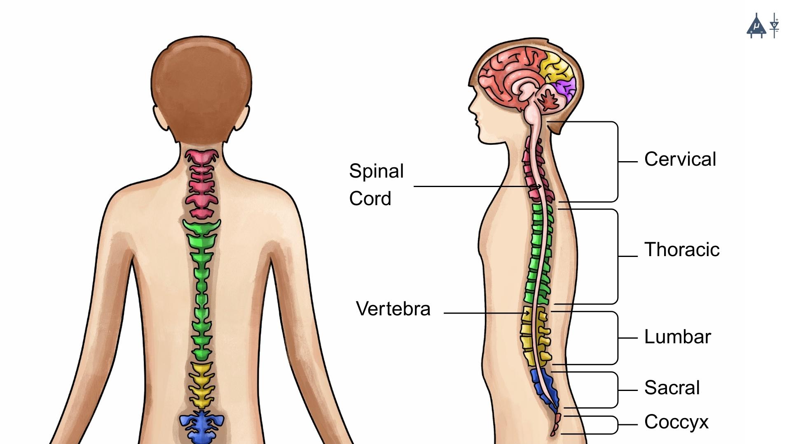
Spinal cord and vertebrae#
Cerebrospinal Fluid (CSF)
Protection and buoyancy: CSF is a clear, colorless fluid which acts as a shock absorber, protecting the brain and spinal cord from injury by providing a cushioning effect. It also reduces the effective weight of the brain (from 1400g to about 50g), preventing it from pressing down on the base of the skull.
Maintains stable microenvironment: Neurons require a stable environment to function properly. CSF helps maintain the chemical balance of the brain by removing waste products, distributing nutrients, and regulating ion concentrations.
Homeostasis: CSF helps regulate intracranial pressure and provides a pathway for the exchange of substances between the blood and the brain, contributing to overall homeostasis.
Clinical importance: CSF can be sampled through a lumbar puncture (spinal tap) to diagnose infections, bleeding, or neurological disorders. Abnormalities in CSF composition can indicate conditions such as meningitis, multiple sclerosis, or brain tumors.
1.3 Peripheral Nervous System (PNS)#
The Peripheral Nervous System connects the Central Nervous System to the rest of the body and is responsible for transmitting signals to and from various organs and tissues. It is divided into two major systems:
1.3.1 Somatic Nervous System (SNS)#
The Somatic Nervous System controls voluntary movements and transmits sensory information to and from the central nervous system. It consists of:
Sensory Neurons (Afferent Neurons): These neurons carry signals from sensory receptors (skin, muscles, joints) to the CNS, allowing us to perceive sensations like pain, temperature, and touch.
Motor Neurons (Efferent Neurons): These neurons transmit commands from the CNS to the skeletal muscles, enabling voluntary movement such as walking, talking, and picking up objects.
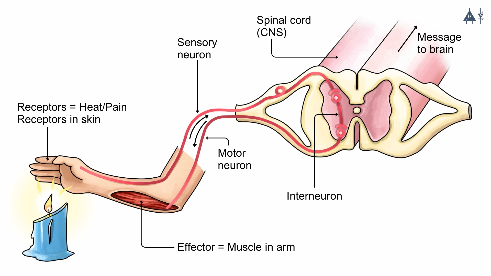
Somatic reflex arc#
1.3.2 Autonomic Nervous System (ANS)#
The Autonomic Nervous System controls involuntary physiological processes, such as heart rate, digestion, and respiratory rate. It operates without conscious control and is divided into two main parts:
Sympathetic Nervous System: Known as the “fight or flight” system, it prepares the body for stress or emergency situations by increasing heart rate, dilating pupils, releasing adrenaline, and redirecting blood flow to muscles.
Parasympathetic Nervous System: It does the opposite of the sympathetic nervous system. Often referred to as the “rest and digest” system, it promotes relaxation by slowing the heart rate, promoting digestion, and conserving energy after a stressful event.
Enteric Nervous System (ENS)
It is considered mostly a part of the autonomic nervous system along with sympathetic and parasympathetic systems, but in some cases, it is also considered as a separate division of the nervous system.
It is a complex network of neurons that governs the function of the gastrointestinal system, that’s why it is often called the gut brain or second brain. It can operate independently of the brain and spinal cord, but it also communicates with the CNS through the sympathetic and parasympathetic nervous systems.
It controls various functions of the digestive system, including motility (movement of food through the digestive tract), secretion of digestive enzymes, blood flow to the gut, and immune responses in the gastrointestinal tract.
The ENS contains around 100 million neurons, which is more than the spinal cord, and it can function autonomously, meaning it can regulate digestive processes without input from the brain.
Clinical importance: The ENS is involved in various gastrointestinal disorders, such as irritable bowel syndrome (IBS) and inflammatory bowel disease (IBD), and it is also being studied for its potential role in mental health conditions like anxiety and depression due to the gut-brain connection.
Note
There are two types of cells in the nervous system: Neurons (nerve cells) and Neuroglia (glial cells)
1.4 Neurons#
Neurons are the building blocks of the nervous system and are responsible for receiving and transmitting electrochemical signals throughout the body.
Fun Fact
Our brain is made up of about 86 billion neurons (100 trillion synaptic connections).
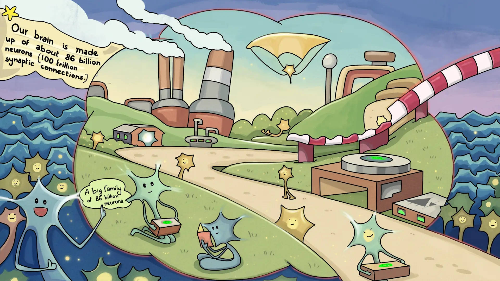
Fun Fact
Most mature neurons can’t divide after birth, but they can still form new connections throughout life. That’s why learning new skills keeps your brain “young”
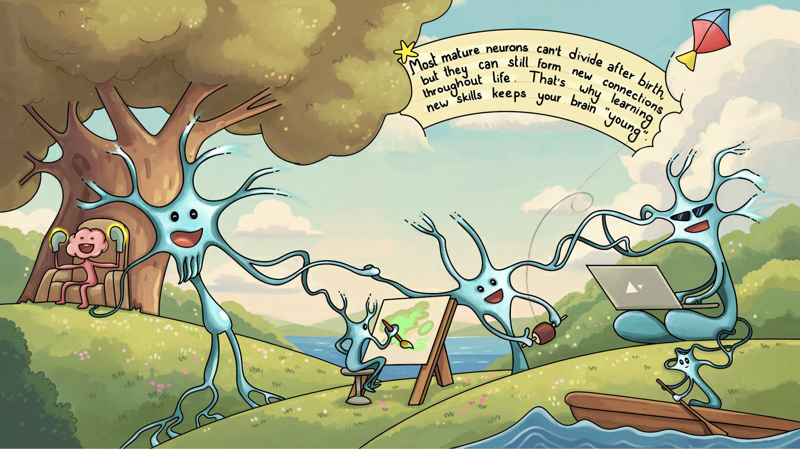
1.4.1 Structure of Neuron#
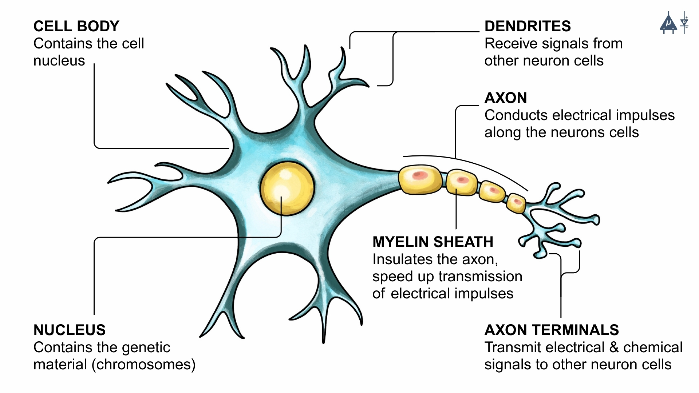
Structure of a neuron#
Cell Body (Soma): The soma, or cell body, is the core of the neuron which maintains the cell and keeps the neuron functioning efficiently. It is enclosed by a membrane that protects it and allows it to interact with its immediate surroundings.
Nucleus: Nucleus contains the genetic material (chromosomes) of the neuron cell.
Dendrites: Dendrites are the tree root shaped part of the neuron which is responsible for receiving information from other neurons and to transmit electrical signals to the cell body.
Axons: Axons are the tail-like structure of the neuron which are responsible for transmitting electrical impulses (action potentials) away from the cell body toward other neurons.
Myelin sheath: Myelin sheath is a fatty layer that insulates the axon, speeding up signal transmission.
Synapse: Neurons do not touch each other, but where one neuron comes close to another neuron, a synapse is formed between the two which acts as a junction between two neurons where neurotransmitters are released to transmit signals to the next neuron.
Note
There are axonless neurons too, where the signal is transmitted and received both by the dendrites.
1.4.2 Types of Neurons#
Based on Function#
Sensory Neurons: Transmit sensory information (e.g., pain, temperature, pressure) from receptors to the CNS.
Motor Neurons: Carry commands from the CNS to muscles and glands, enabling actions like muscle contraction or hormone release.
Interneurons: These neurons are found in the CNS and act as connectors between sensory and motor neurons. They help process and integrate information. It is the most common type of neuron.
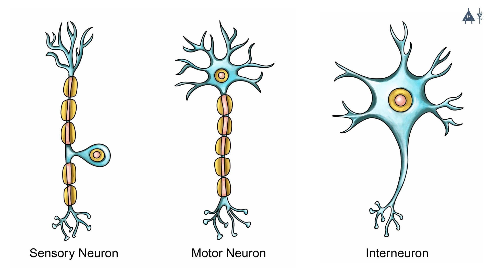
Types of neurons based on function#
Based on number of processes#
Unipolar Neurons: These neurons possess a single process that extends from the cell body. They are commonly found in invertebrates, while in vertebrates they occur in certain regions of the autonomic nervous system.
Pseudounipolar Neurons: These neurons originate with a single process that later divides into two branches: a central branch and a peripheral branch. A typical example is the neuron in the dorsal root ganglion, which transmits sensory signals to the spinal cord.
Bipolar Neurons: These neurons have two processes: one axon and one dendrite, and are typically located in specialized sensory regions, such as the retina of the eye.
Multipolar Neurons: These are the most common neurons in the human nervous system. They have multiple processes extending from the cell body, and a typical example is the motor neuron found in the spinal cord.
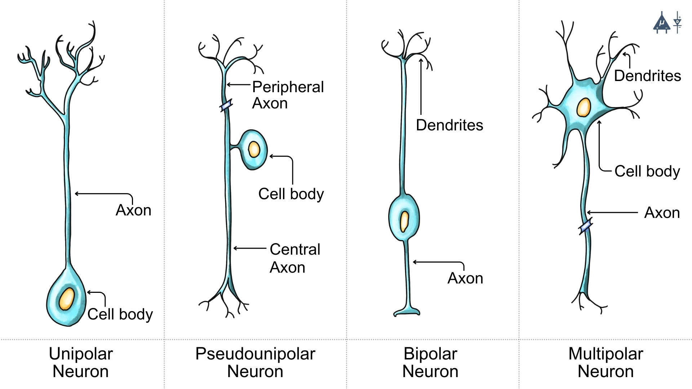
Types of neurons based on number of processes#
Based on the length of axon#
Golgi Type I Neurons: These neurons have long axons that can extend over a meter in length.
Golgi Type II Neurons: These neurons have short axons that do not extend far from the cell body.
Based on dendritic pattern#
Pyramidal cells: Dendrites of these cells spread like a pyramid. They are found in the cerebral cortex and hippocampus and are involved in cognitive functions such as learning and memory.
Stellate cells: Dendrites of these cells spread in all directions like a star. They are found in the cerebral cortex and are involved in processing sensory information.
Fun Fact
The longest cells in the human body are neurons (nerve cells). Some neurons (motor neurons) can reach up to 1-1.5 metres extending from lower spinal cord to toes.
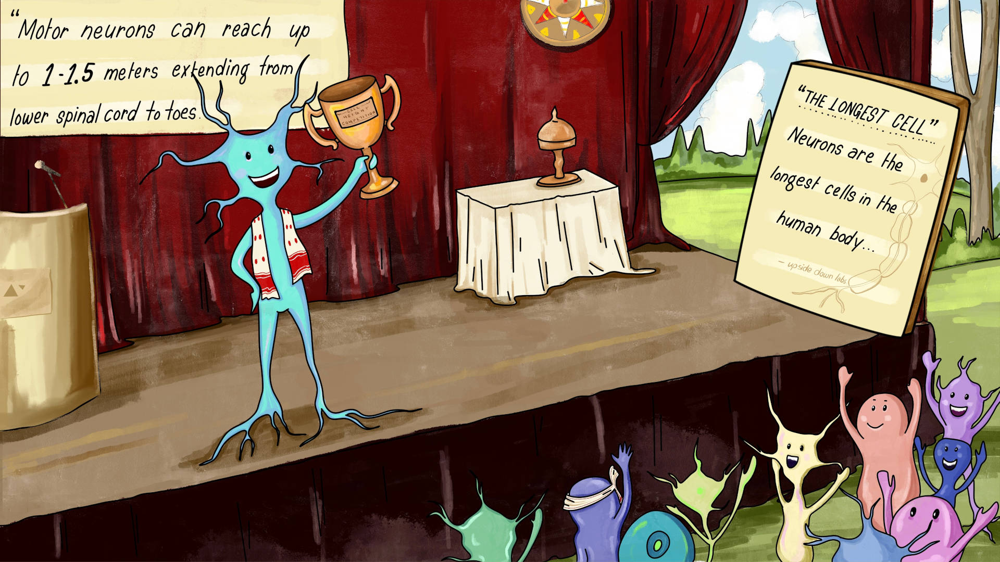
1.5 Glial cells#
Glial cells (or neuroglia) are non-neuronal cells of the nervous system which provide structural support, nourishment and protection to the neurons.
1.5.1 Types of glial cells#
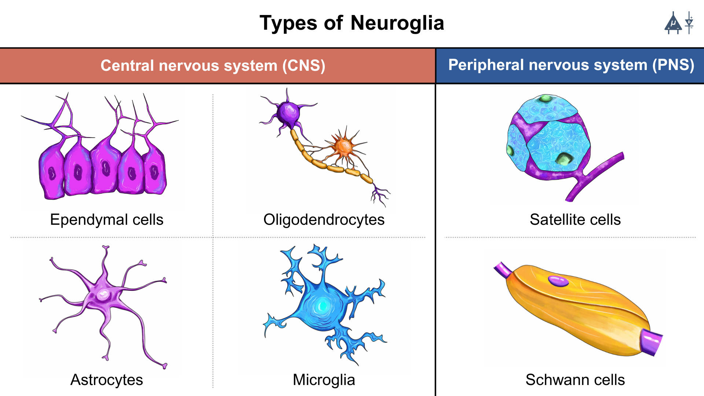
Types of glial cells based on location#
1.5.1.1 In Central Nervous System#
1. Microglia#
Microglia are the small defense cells of the CNS.
Immune cells of the brain
Phagocytic in nature as they remove dead cells and pathogens
Activates during infection or injury
Releases inflammatory molecules when needed
2. Macroglia#
Macroglia are the large supporting glial cells. Macroglia are of different types which are given below :
a. Astrocytes#
Star-shaped cells
Provide nutrients to neurons
Regulate ion balance, neurotransmitters (e.g., glutamate uptake)
Help in synapse formation
Most abundant glial cell type in the CNS
b. Oligodendrocytes#
Produce myelin around multiple CNS axons
One oligodendrocyte can myelinate many axons
Increase speed of action potential conduction (saltatory conduction)
c. Ependymal cells#
Line the ventricles of the brain and central canal of spinal cord
Produce and circulate cerebrospinal fluid (CSF)
Part of the choroid plexus
1.5.1.2 In Peripheral Nervous System#
1. Schwann cells#
Similar to oligodendrocyte
Produce myelin in the peripheral nervous system
One Schwann cell myelinates only one segment of a single axon
2. Satellite cells#
Satellite cells in the PNS are glial cells that surround neuronal cell bodies in ganglia and regulate their chemical environment, providing support, protection, and metabolic assistance.
1.5.2 Difference between neurons and glial cells#
Features |
Neurons |
Glial Cells |
|---|---|---|
Primary role |
Communication via electrical & chemical signals |
Support, protection, nourishment to neurons |
Generate action potential |
Yes |
No |
Structure |
Dendrites, axon, synapses |
No axon/dendrites |
Division |
Divides rarely |
Can divide |
Number |
Less |
More |
Myelination |
Receive myelin |
Produce myelin |
Role in repair |
Limited |
Active in repair (especially PNS) |
Examples |
Motor neuron, sensory neuron, interneuron |
Astrocyte, oligodendrocyte, Schwann cell, microglia |
1.6 Summary#
This module introduces the basic structure and components of the human nervous system. It explains how the nervous system is divided into the Central Nervous System (CNS), which includes the brain and spinal cord, and the Peripheral Nervous System (PNS), which connects the CNS to the rest of the body. The module also describes neurons, the specialized cells responsible for transmitting electrical signals, and glial cells, which support and maintain neuronal function.
Understanding the structure and roles of these cells provides the foundation for exploring how neurons generate electrical signals. In the next module, we examine the resting membrane potential, a fundamental electrical property of neurons that enables them to produce and transmit signals throughout the nervous system.